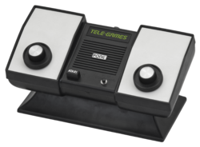
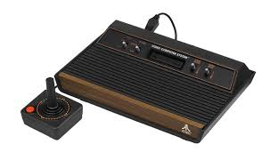

| Primeira geração |
|---|
| Criado em 1972 Pong É um dos primeiros jogos de videogame da história e o primeiro a alcançar sucesso comercial, simulando um tênis de mesa com dois retângulos e um quadrado. Criado por Allan Alcorn a pedido de Nolan Bushnell, o jogo foi crucial para a popularização dos arcades e, posteriormente, para o mercado de consoles domésticos.  |
|---|
| segunda geração |
|---|
| Criado em 1972 Atari fundada em 1972 por Nolan Bushnell e Ted Dabney, revolucionou o entretenimento com o lançamento do Pong (arcade) e, posteriormente, do icônico console Atari 2600 (VCS) em 1977. Popularizou o uso de cartuchos trocáveis, tornando-se sinônimo de videogame nos anos 70/80. Apesar da crise de 1983, a empresa consolidou a indústria de jogos doméstica.  |
|---|